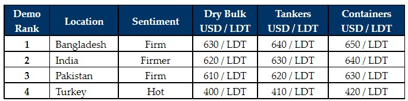

inWeekly Demolition Reports07/03/2022

It was another incredibly firm showing from the sub-continent markets this week, particularly Bangladesh and even a recently resurgent India (who now seem to be competing even more on tonnage), whilst Pakistan misses out on units once again, largely behind on the numbers due to local concerns surrounding the impact of the ongoing war in Ukraine.
Except China, local steel plate prices have made some impressive gains across the board in the top recycling international destinations this week, especially in India and Bangladesh. As a result, Alang Buyers have managed to secure the show stopping sale of the week, with a Capesize Bulker being committed for strictly HKC recycling and that too at levels competitive with those from Bangladesh.
Even in Turkey, both import and local steel plate prices have made improvements this week, with levels for all types of tonnage now firmly poised past the USD 400/Ton barrier – a first in memorable history.
Meanwhile, Chattogram continues to lead the way with some of the best rates witnessed in the sub-continent since the shipping boom of 2008, during which, the world saw recycling prices exceed USD 800/LDT. However, there seems little danger of that feat being repeated once again (at least for now).
Commodity prices have also surged during this bleak time of conflict and the cost to operate / deliver a vessel for recycling has also risen exponentially, primarily due to soaring oil prices that are now positioned well above USD 100 / barrel (at the time of writing).
The supply of vessels may cool off going into the second quarter of the year due to rising Tanker rates and continuing firm Dry Bulk income – unless those vessels that have SS / DD due imminently and BWTS installations required, that may make them uneconomical to continue trading.
For week 9 of 2022, GMS demo rankings / pricing for the week are as below.

📄 Download PDF: 2022-03-06TFJ_org.pdfSource: GMS,Inc. ,https://www.gmsinc.net/gms_new/index.php/web